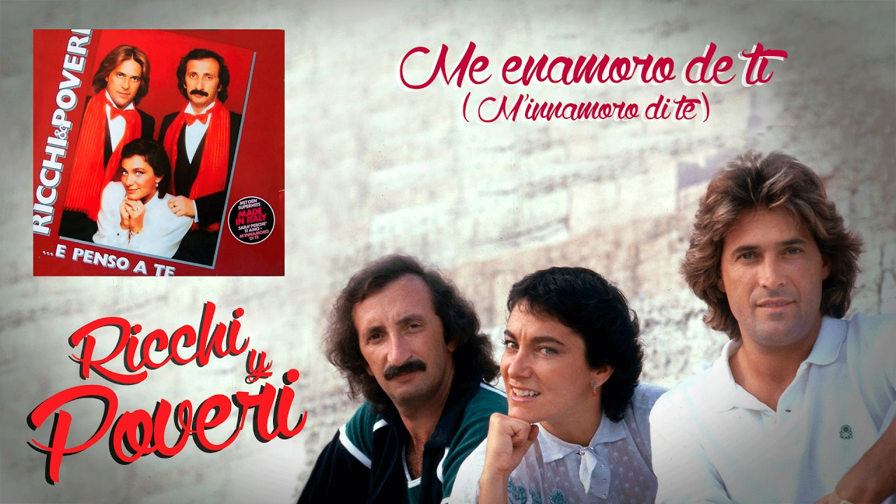
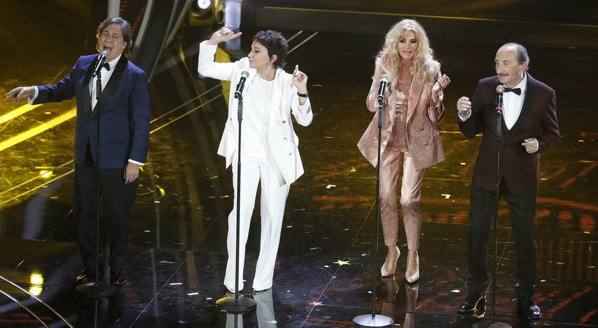

Ricchi e Poveri is a famous Italian music group that began their career in Genoa in 1967. Widely popular in the 1970s and 1980s, they sold over 20 million records and achieved international success. In 1978, they represented Italy at the Eurovision Song Contest with the song Questo Amore. They also took part in several editions of the Sanremo Music Festival, winning first place in 1985 with Se m’innamoro. Two of their biggest hits are Che sarà (1971) and Sarà perché ti amo (1981), the latter becoming the theme song for the French film L’Effrontée and later adapted into French by Karen Cheryl as Les Nouveaux Romantiques.
"Sarà perché ti amo" is a song performed by the popular Italian music group Ricchi e Poveri in 1981. A cult hit and a multigenerational symbol of Italian culture, the song is frequently played in festive and sporting contexts. Since the 2010s, it has notably been sung a cappella by fans of the AC Milan football team before every match at San Siro Stadium.
Are you interested in this band?
A powerful tribute to Italian music comes to life at the iconic Tivoli Stadium. A thrilling evening that blends tradition and modern flair, designed to get the German crowd singing along to the most beloved Italian hits.
In the heart of the Eternal City, the Auditorium Parco della Musica hosts a special evening celebrating Italian sound and soul. A refined and heartfelt event where music and lyrics echo in one of Rome’s most iconic venues.
The open-air amphitheater in Banska Bystrica lights up with the passion and energy of Italian music. A vibrant celebration of rhythm, joy, and connection that brings the spirit of Italy to Slovakia through the power of live performance.